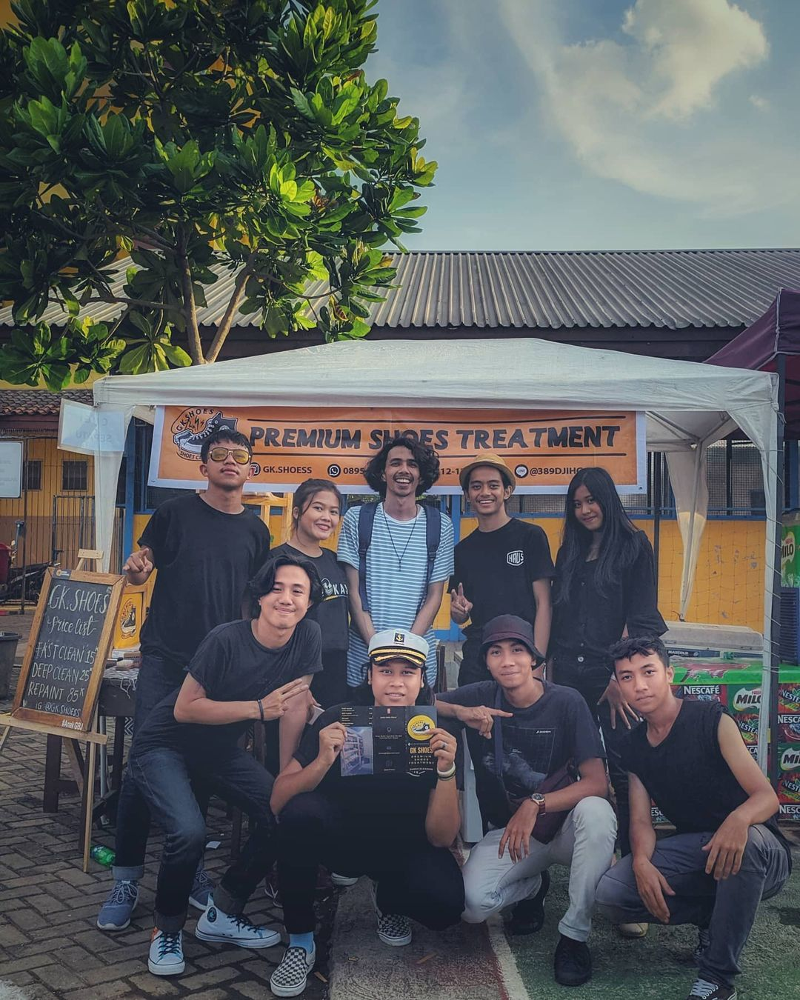

Kami hadir di Indonesia terutama di kota Bogor pada 2018. Kami sangat serius meningkatkan kualitas dan juga terus membagikan tips dalam merawat sepatu. Kami ahli dalam semua jenis sepatu seperti (Leather, Canvas, Nubuck, Knit, Suede, & etc..). Tentu nya setiap jenis sepatu memiliki cara ataupun tingkat kesulitan yang sangat berbeda untuk dibersihkan. Kami juga akan menyediakan layanan pencucian tas, dompet & topi. Untuk wilayah Bogor dan Depok kami juga memiliki layanan tambahan untuk Pickup & Delivery sepatu kalian atau dapat mengunjungi dropzone terdekat.
Tentang GK.Shoes
Kami mempunyai anggapan bahwa, sepatu dapat memperlihatkan banyak hal tentang seseorang, sementara banyak orang menganggapnya sebagai lelucon, kami GK.Shoes menanggapi hal tersebut dengan sangat serius. Orang benar-benar menilai orang lain tentang tingkat kebersihan, kepribadian, sikap mereka dalam menjalaninya dan senantiasa dalam hidup sehat.
Sepatu adalah bagian paling penting dan signifikan dalam pemakaian kita sehari-hari. Sementara sepatu sangat penting untuk kenyamanan kaki, sepatu juga dapat menjadi kendaraan untuk membawa kuman (jika tidak dirawat dengan baik). Keringat, debu, kotoran… Sepatu melewati banyak area yang tidak higienis dan jika tidak dibersihkan secara teratur dapat menjadi rumah yang sempurna bagi kuman, yang menyebabkan infeksi serius dan penyakit lainnya.
Membersihkan sepatu dan merawat nya tidak sesederhana menempatkan mereka di mesin cuci dan menggunakan lem instan atau menggunakan sikat gigi bekas untuk membersihkan mereka (yang sebagian besar dari kita mencoba untuk melakukan nya), ada banyak lagi hal yang dilakukan untuk merawat sepatu. Setiap sepatu memiliki ciri/karakter yang berbeda, gaya dan material, yang memerlukan kemampuan untuk mengerti detil dan pemahaman mendalam tentang apa jenis sepatu perlu dibersihkan melalui metode mana.
Menjaga sepatu bersih merupakan bagian penting dari para pecinta sepatu. Kami GK.Shoes memiliki langkah-langkah / SOP yang rinci dalam membersihkan dan mencuci sepatu anda. Setiap pasang sepatu ditangani dengan hati-hati dan pemeriksaan menyeluruh. Kepuasan pelanggan kami menjadi prioritas dalam bisnis kami. Jaminan garansi pun diberikan jika sepatu yang di cuci masih kotor ataupun kurang bersih. segera hubungi kami atau kalian dapat melakukan order online untuk pengaturan pickup oleh kurir kami.
Selamat merawat & mencuci sepatu kesayanganmu.
i Shoe u